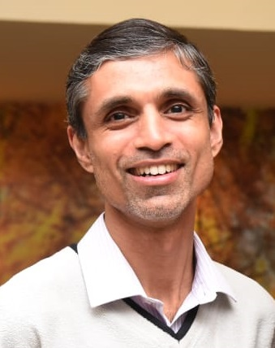
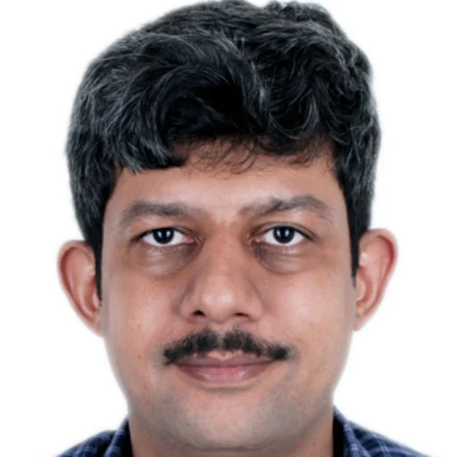
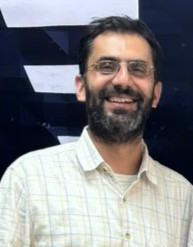
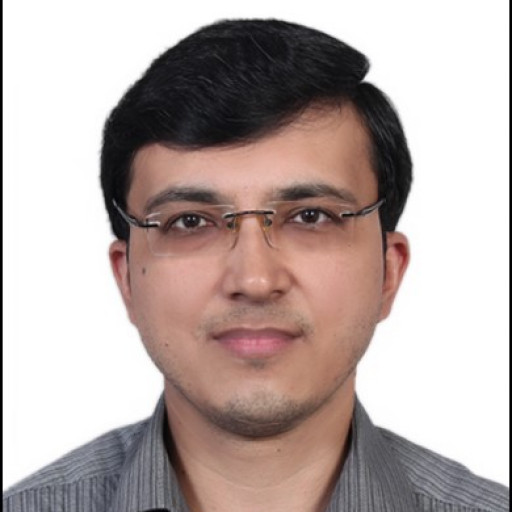
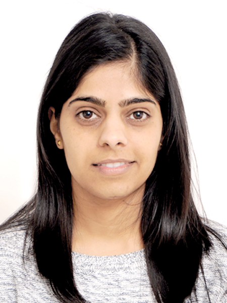
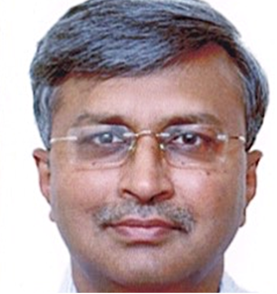

QuEST LAB
“What is the use of a house if you haven’t got a tolerable planet to put it on?”
― Henry David Thoreau
QuEST Lab (Quality of Life Enhancement through Science and Technology) is a part of the Department of Design, Indian Institute of Technology, Delhi. Our vision is to understand the gravity of an environmental problem, especially those involving human presence and interactions. We also seek to translate these understandings into meaningful solutions through design, science, and technology. Not confined to a single discipline, the Lab follows an interdisciplinary approach, speaking the shared language of engineers, physicists, architects, and clinicians.
- How can air quality and meteorology be mapped with high spatiotemporal resolution while remaining cost-effective?
- How do vulnerability dynamics evolve in response to heat waves, air pollution, and airborne disease transmission?
- As a developing nation, how can sustainable technologies (like indigenous medical devices, air quality, and energy instruments) be implemented to address health and environmental challenges?
- How do the transmission dynamics of airborne diseases evolve in microenvironments?
- What are the things we can learn from the communities leading a low-carbon lifestyle?
In this context, we are presently undertaking a holistic exploration of the following questions:

Prof. Jay Dhariwal
Prof. Jay Dhariwal leads the QuEST Lab, supported by a team of dedicated PhD scholars, project scientists, and interns. He is an Associate Professor in the Department of Design at IIT Delhi.
He previously served as a Postdoctoral Fellow at the Massachusetts Institute of Technology, where he worked with Prof. Christopher Reinhart on understanding how weather conditions influence the use of outdoor public spaces. Prior to that, he was a postdoctoral researcher at the University of Leeds, contributing to the design and development of an automated spray medical device to enhance chromoendoscopic surveillance for Inflammatory Bowel Disease (IBD). He was also involved in developing a colon phantom training model with micron-scale features for chromoendoscopy, collaborating with Prof. Nikil Kapur and Prof. Peter Culmer.
He completed his PhD at IIT Bombay, where his research focused on building energy simulation-driven design optimization.
Collaborators

Prof. Seshan Srirangarajan
Department of Electrical Engineering, IIT Delhi

Prof. Narsing Kumar Jha
Department of Applied Mechanics, IIT Delhi

Prof. Kaushik Mukherjee
Department of Mechanical Engineering, IIT Delhi

Dr. Nishkarsh Gupta
Department of Onco-Anaesthesia and
Palliative Medicine, AIIMS Delhi

Prof. Vikram Singh
Department of Chemical Engineering, IIT Delhi

Prof. Dinesh Kalyanasundaram
Centre for Biomedical Engineering, IIT Delhi

Prof. Nishant Verma
Department of Microbiology, AIIMS Delhi

Prof. Deepika Bhattu
Department of Civil and Infrastructure Engineering, IIT Jodhpur

Prof. Ravi Mittal
Department of Orthopaedics, AIIMS Delhi
Prof. Anant Mohan
Department of Pulmonary Medicine, AIIMS Delhi

Prof. Karan Madan
Pulmonary medicine and sleep disorders, AIIMS Delhi

Prof. Saurabh Mittal
Department of Pulmonary Medicine, AIIMS Delhi